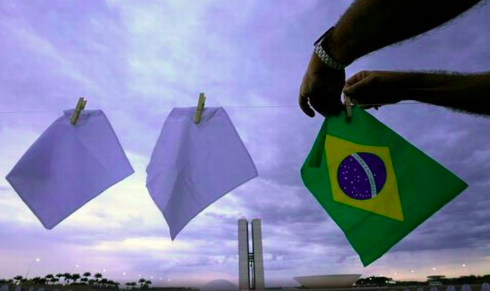
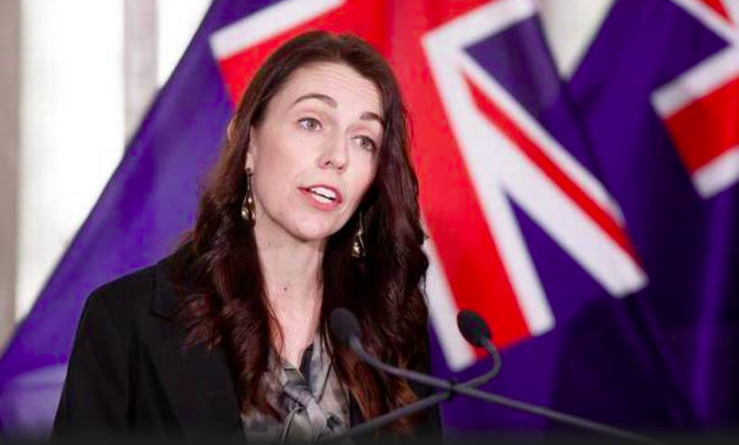
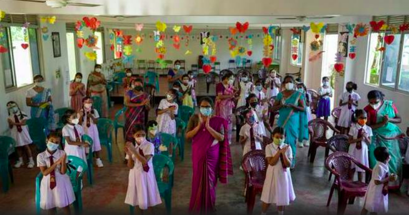
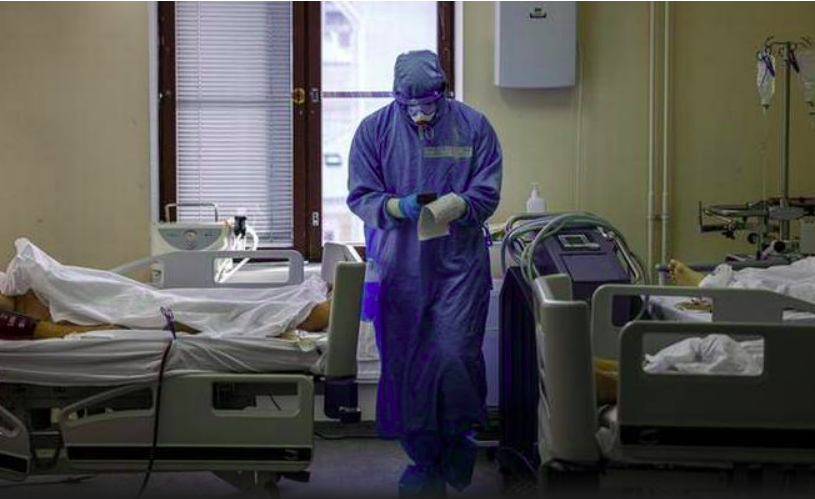

International News
Senate committee’s inquiry accusations are ‘fantasies’: Brazil President Jair Bolsonaro
Brazil’s President Jair Bolsonaro said on Thursday the charges that a Senate report has recommended he should face are “fantasies” and should be ignored. The report presented on Wednesday alleged that Mr. Bolsonaro committed crimes against humanity, among other proposed charges, for bungling Brazil’s response to COVID-19 and contributing to the country having the world’s second-highest pandemic death toll.
COVID-19 | New Zealand sets 90% vaccination target to end lockdowns
New Zealand’s government on Friday set an ambitious target of fully vaccinating 90% of all eligible people to end coronavirus lockdowns. Prime Minister Jacinda Ardern had been under pressure to provide a pathway to freedom for people living in Auckland, who have been in lockdown for more than two months.
Schools reopen across Sri Lanka even as teachers’ strike continues
Most faculty and school principals stayed from the classes as the teachers’ unions have voiced dissatisfaction over the talks on wages. Primary schools across Sri Lanka reopened on Thursday after a gap of over six months, even as the government was negotiating with protesting teachers over their demand for an increment in salary.
Russia tightens restrictions as infections, deaths soar
Authorities in Moscow on Thursday announced plans to shut restaurants, cinemas and non-food stores and introduce other restrictions later this month, as Russia registered the highest daily numbers of new coronavirus infections and deaths since the start of the pandemic. The government coronavirus task force reported 36,339 new confirmed infections and 1,036 deaths in the past 24 hours. That brought Russia’s death toll to 227,389, by far the highest in Europe.
China passes law to cut homework pressure on students
In recent months, the Chinese education ministry has also limited gaming hours for minors. China has passed an education law that seeks to cut the “twin pressures” of homework and off-site tutoring in core subjects, the official Xinhua news agency said on October 23.
G7 countries reach breakthrough on digital trade and data
The deal sets out a middle ground between highly regulated data protection regimes used in European countries and the more open approach of the United States. The Group of Seven wealthy nations agreed on a joint set of principles to govern cross-border data use and digital trade, Britain said in what was described as a breakthrough that could liberalise hundreds of billions of pounds of trade.